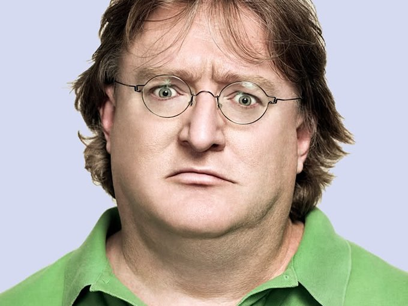

Gabe Newell
A Pioneer In Digital Distribution

Gabe Newell is a programmer that co-founded the Valve Corperation
Here is some information about the daddy of PC gaming:
- 1962 - Gabe Newell is born in Seattle Washington
- 1980-1983 - Gabe Newell attended Harvard University.
- 1983-1996 - Gabe worked for the Technology Giant, Microsoft.
- 1983-1996 - Served as a producer of Windows 1.01, 1.02, and 1.03 OS's
- 1996 - Gabe Newell and coworker Mike Harrington leave to found Valve
- 1998 - Valve develops and releases a new game, Half-Life
- 2003 - Valve unvails their revolutionary digital distribution app, Steam
- 2004 - Valve releases the sequal to Half-Life, Half-Life 2
- 2007 - Newell claims developing games on consoles is a waste of time
- Has become known as GabeN
"I've always wanted to be a giant space crab."
-Gabe Newell